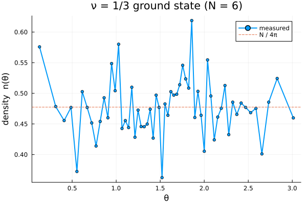

1. The composite-fermion ground state
This first tutorial builds the $\nu = 1/3$ composite-fermion ground state, samples it with the Metropolis–Hastings–Gibbs walk, and measures its density profile on the sphere. By the end you will know the whole workflow: build → thermalize → sample → measure.
We keep the system small and the chains short so the page builds quickly; for production runs you would use more particles and far more steps.
using CFsOnSphere
using Random
using LinearAlgebra
LinearAlgebra.BLAS.set_num_threads(1) # small dense determinants: single-threaded BLAS wins
using Plots
gr()Plots.GRBackend()Building the state
A Jain state is fixed by three integers: the number of particles N, the number of filled $\Lambda$-levels n, and the Jastrow power p (the number of attached vortices, even). They give the filling $\nu = n/(pn+1)$. The helper cf_ground_state_lm returns the effective monopole strength Qstar and the occupied $(L, L_z)$ orbitals.
Here p = 2 (one vortex pair) and n = 1, i.e. the $\nu = 1/3$ Laughlin state.
N, n, p = 6, 1, 2 # ν = n/(pn+1) = 1/3
Qstar, l_m_list = cf_ground_state_lm(N, n, p)
@show Qstar length(l_m_list);Qstar = 5//2
length(l_m_list) = 6We allocate two wavefunction buffers — the current (accepted) state and the proposed state. Ψproj is the Jain–Kamilla projected composite-fermion wavefunction.
ψ = Ψproj(Qstar, p, N, l_m_list)
ψ_next = Ψproj(Qstar, p, N, l_m_list)Ψproj(5//2, 2, 6, Tuple{Rational{Int64}, Rational{Int64}}[(5//2, -5//2), (5//2, -3//2), (5//2, -1//2), (5//2, 1//2), (5//2, 3//2), (5//2, 5//2)], 5//2, Rational{Int64}[-5//2, -3//2, -1//2, 1//2, 3//2, 5//2], Rational{Int64}[-5//2, -3//2, -1//2, 1//2, 3//2, 5//2], ComplexF64[-0.0 + 0.02159338434195867im 0.0 - 0.1079669217097929im … -0.0 + 0.10796692170979208im 0.0 - 0.021593384341958424im; 0.048284275252899064 + 0.0im -0.1448528257586968 + 0.0im … -0.14485282575869576 + 0.0im 0.0482842752528986 - 0.0im; … ; -0.0 + 0.048284275252899536im -0.0 + 0.1448528257586963im … 0.0 - 0.1448528257586954im 0.0 - 0.048284275252898676im; 0.021593384341958972 + 0.0im 0.1079669217097932 + 0.0im … 0.1079669217097915 + 0.0im 0.02159338434195843 + 0.0im], ComplexF64[0.0 + 0.0im, 0.0 + 0.0im, 0.0 + 0.0im, 0.0 + 0.0im, 0.0 + 0.0im, 0.0 + 0.0im], ComplexF64[0.0 + 0.0im, 0.0 + 0.0im, 0.0 + 0.0im, 0.0 + 0.0im, 0.0 + 0.0im, 0.0 + 0.0im], ComplexF64[0.0 + 0.0im 0.0 + 0.0im … 0.0 + 0.0im 0.0 + 0.0im; 0.0 + 0.0im 0.0 + 0.0im … 0.0 + 0.0im 0.0 + 0.0im; … ; 0.0 + 0.0im 0.0 + 0.0im … 0.0 + 0.0im 0.0 + 0.0im; 0.0 + 0.0im 0.0 + 0.0im … 0.0 + 0.0im 0.0 + 0.0im], ComplexF64[0.0 + 0.0im 0.0 + 0.0im … 0.0 + 0.0im 0.0 + 0.0im; 0.0 + 0.0im 0.0 + 0.0im … 0.0 + 0.0im 0.0 + 0.0im; … ; 0.0 + 0.0im 0.0 + 0.0im … 0.0 + 0.0im 0.0 + 0.0im; 0.0 + 0.0im 0.0 + 0.0im … 0.0 + 0.0im 0.0 + 0.0im], [0.0 0.0 … 0.0 0.0; 0.0 0.0 … 0.0 0.0; … ; 0.0 0.0 … 0.0 0.0; 0.0 0.0 … 0.0 0.0], ComplexF64[0.0 + 0.0im 0.0 + 0.0im … 0.0 + 0.0im 0.0 + 0.0im; 0.0 + 0.0im 0.0 + 0.0im … 0.0 + 0.0im 0.0 + 0.0im; … ; 0.0 + 0.0im 0.0 + 0.0im … 0.0 + 0.0im 0.0 + 0.0im; 0.0 + 0.0im 0.0 + 0.0im … 0.0 + 0.0im 0.0 + 0.0im], ComplexF64[0.0 + 0.0im 0.0 + 0.0im … 0.0 + 0.0im 0.0 + 0.0im], Float64[], ComplexF64[0.0 + 0.0im 0.0 + 0.0im … 0.0 + 0.0im 0.0 + 0.0im; 0.0 + 0.0im 0.0 + 0.0im … 0.0 + 0.0im 0.0 + 0.0im; … ; 0.0 + 0.0im 0.0 + 0.0im … 0.0 + 0.0im 0.0 + 0.0im; 0.0 + 0.0im 0.0 + 0.0im … 0.0 + 0.0im 0.0 + 0.0im], ComplexF64[0.0 + 0.0im; 0.0 + 0.0im; … ; 0.0 + 0.0im; 0.0 + 0.0im;;; 0.0 + 0.0im; 0.0 + 0.0im; … ; 0.0 + 0.0im; 0.0 + 0.0im;;; 0.0 + 0.0im; 0.0 + 0.0im; … ; 0.0 + 0.0im; 0.0 + 0.0im;;; 0.0 + 0.0im; 0.0 + 0.0im; … ; 0.0 + 0.0im; 0.0 + 0.0im;;; 0.0 + 0.0im; 0.0 + 0.0im; … ; 0.0 + 0.0im; 0.0 + 0.0im;;; 0.0 + 0.0im; 0.0 + 0.0im; … ; 0.0 + 0.0im; 0.0 + 0.0im], 0.0 + 0.0im, ComplexF64[0.0 + 0.0im 0.0 + 0.0im … 0.0 + 0.0im 0.0 + 0.0im; 0.0 + 0.0im 0.0 + 0.0im … 0.0 + 0.0im 0.0 + 0.0im; … ; 0.0 + 0.0im 0.0 + 0.0im … 0.0 + 0.0im 0.0 + 0.0im; 0.0 + 0.0im 0.0 + 0.0im … 0.0 + 0.0im 0.0 + 0.0im])The sampling weight
We sample positions with probability $|\Psi|^2$. The walker maximises a log probability, and $|\Psi|^2 = |\det|^2\,|\text{Jastrow}|^2$, so:
logpdf(ψ) = 2.0 * real(logdet(ψ.slater_det) + ψ.jastrow_factor_log)logpdf (generic function with 1 method)Thermalizing
Start from random positions and let gibbs_thermalization! equilibrate the chain while auto-tuning the proposal step size σ toward a 50% acceptance rate. It returns the index of the next particle to move, the tuned σ, a timing, and the acceptance rate.
rng = MersenneTwister(2024)
θ, ϕ = rand_θ_ϕ_gen(rng, N)
θ_next, ϕ_next = copy(θ), copy(ϕ)
σ = π / sqrt(12)
sampling_iter, σ, _, therm_accept =
gibbs_thermalization!(rng, ψ, ψ_next, θ, ϕ, θ_next, ϕ_next, σ, logpdf, 5_000)
@show therm_accept σ;therm_accept = 0.4878
σ = 0.8285295227186982Measuring the density
We accumulate a histogram of the polar angle $\theta$ in equal-area bins (uniform in $\cos\theta$). update_density! adds the current configuration to the histogram. We wrap the Metropolis loop in a function so all loop variables stay in local scope.
function sample_density(rng, ψ, ψ_next, θ, ϕ, θ_next, ϕ_next, σ, sampling_iter, logpdf;
n_steps = 20_000, n_bins = 60)
N = length(θ)
θmesh = acos.(LinRange(1.0, -1.0, n_bins + 1)) # equal-area bin edges
Agrid = 2π .* (cos.(θmesh[1:end-1]) .- cos.(θmesh[2:end]))
density = zeros(Float64, n_bins)
logpdf_current = logpdf(ψ)
accepted = 0
for _ in 1:n_steps
i = sampling_iter
θ_next[i], ϕ_next[i] = proposal(rng, θ[i], ϕ[i], σ)
update_wavefunction!(ψ_next, θ_next[i], ϕ_next[i], i)
logpdf_next = logpdf(ψ_next)
if logpdf_next - logpdf_current >= log(rand(rng))
θ[i], ϕ[i] = θ_next[i], ϕ_next[i]
copy!(ψ, ψ_next, i)
logpdf_current = logpdf_next
accepted += 1
else
θ_next[i], ϕ_next[i] = θ[i], ϕ[i]
copy!(ψ_next, ψ, i)
end
update_density!(θmesh, θ, density)
sampling_iter = mod(sampling_iter, N) + 1
end
θcenters = 0.5 .* (θmesh[1:end-1] .+ θmesh[2:end])
return θcenters, density ./ n_steps ./ Agrid, accepted / n_steps
end
θc, density, accept = sample_density(rng, ψ, ψ_next, θ, ϕ, θ_next, ϕ_next, σ, sampling_iter, logpdf)
@show accept;accept = 0.4829On a sphere with no edge the bulk density should be flat (up to finite-size wiggles and Monte Carlo noise). The dashed line marks the expected uniform value, $N/4\pi$.
plot(θc, density; lw=2, marker=:circle, ms=3, label="measured",
xlabel="θ", ylabel="density n(θ)", title="ν = 1/3 ground state (N = $N)")
hline!([N / (4π)]; ls=:dash, label="N / 4π")
This page was generated using Literate.jl.